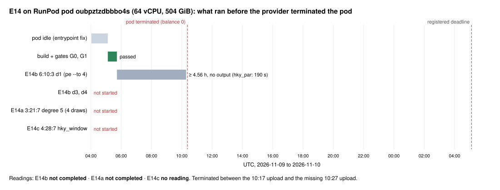

Not completed. RunPod terminated the pod, a 64-vCPU AMD EPYC 7702P with 504 GiB of memory, part-way through the first E14b draw. The pod's last upload landed at 10:17:27 UTC and the next 10-minute upload never arrived. At 13:07 UTC the API returned "pod not found" and the account balance was −0.04 USD. Termination for a zero balance is inferred from those two facts; no provider event log was read. Another pod on the same account (not part of this study) was billing 1.19 USD/h at the same time. Records: e14/pod/ (last out.tgz, sha256 0f8603c6…751965) and e14/score.json. Report: reports/run-20261109-e14/.
| Unit | Status | Registered reading | Prediction outcome |
|---|---|---|---|
| Gates G0 and G1 | passed (G0 7/7 tests; G1 diff against S3.d0.b4.jsonl empty) | — | — |
| E14b 6:10:3 d1 | ran ≥ 16,428 s (05:43:39 to 10:17:27 UTC) without output | not completed | "controls confirmed" (0.85) failed |
| E14b d3, d4 | not started | ||
| E14a 3:21:7, degree 5, draws 0/1/3/4 | not started | not completed | "not completed" (0.15) occurred |
| E14c 4:28:7, hky_window | not started | no reading | "no reading" (0.75) occurred |
The combined statement "independent agreement (E13b + E14b)" is not made. E13b's recorded reading stays "disagreement" (3 controls unmeasured; no measured draw differs).
Observation (not a registered reading). On draw d1 of 6:10:3 the reference hky_par closed at degree 4 in 190.4 s on 32 threads (E9). pe with --to 4 --max-cols 600000 on 64 threads had not finished after 4.56 h. Locally, in E13, it exceeded 13 GiB after 2,343 s. So the pe degree-4 system for this 58-variable, 50-equation control costs at least two orders of magnitude more wall time than hky_par's. A rerun as registered would probably spend most of its window on the three controls. Before any rerun, measure pe's matrix size on d1 and decide whether E14a should run first. That is a design question for a new amendment, not a result.
Binary: dreg_linear_guess sha256 f902edfd…321a99, built on the pod from the frozen source archive fd-src-a2be6609.tgz (hash checked: OK). Cost: about 6.3 h × 2.56 USD/h ≈ 16 USD, including the idle first hour.

Sources: research/fall_degree_bounds_20261008/e14/score.json, e14/pod/run.log, PREREGISTRATION.md Amendment 19. Plot: plot_e14.py; render: render.js.